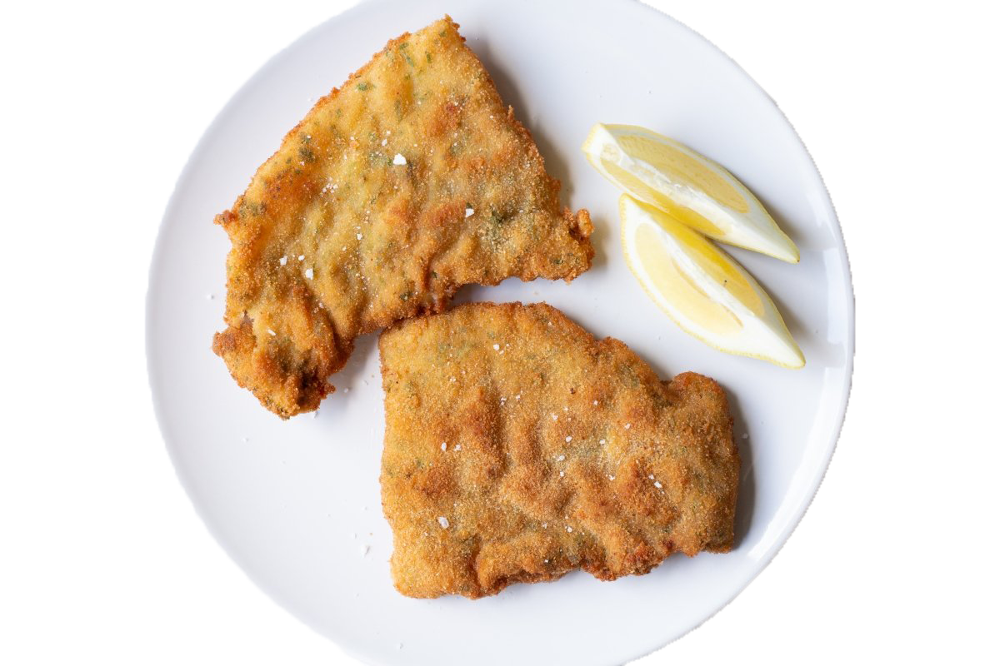

Milanesas caseras
Ideales para un almuerzo o cena.

Ingredientes:
cantidades para un kilo
- 1 kg de carne vacuna (Cuadril, Nalga, Paleta, Peceto)
- 500g pan rallado
- 4 huevos
- 2 dientes de ajo
- sal y comino
Pasos:
- Condimentar la carne con sal y comino a gusto
- Batir los huevos y agregarle sal
- Juntar la carne con los huevos batidos
- Empanar la carne (con huevo y condimentos)
- Llevar al horno o freir
LISTAS PARA COMER ACOMPAÑADAS O COMO SÀNDWICH